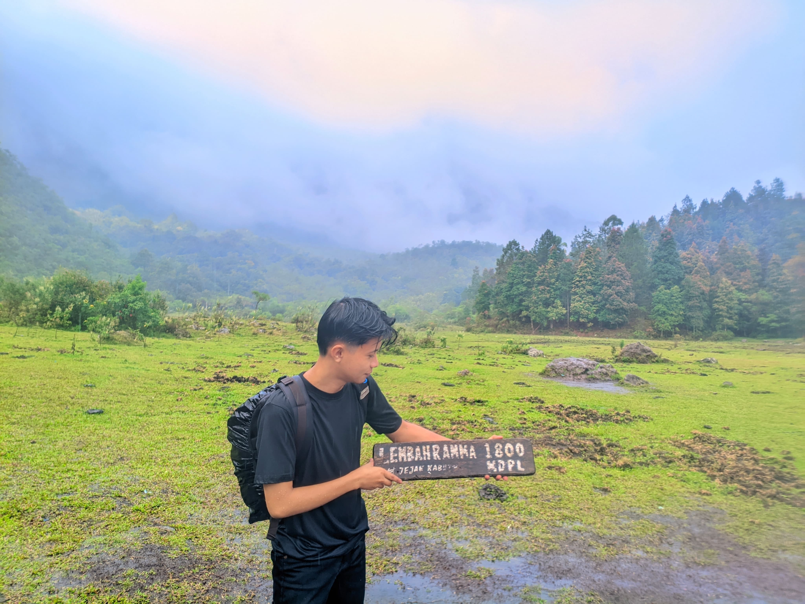
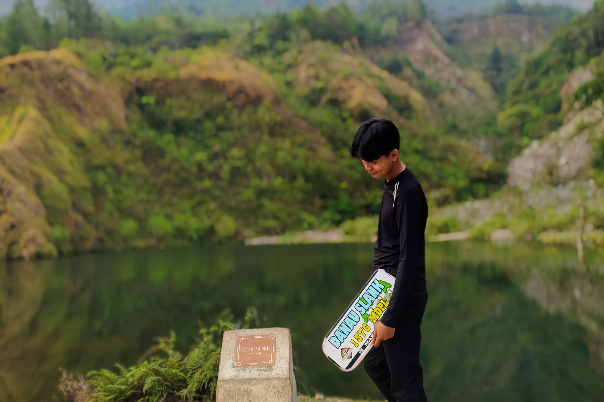
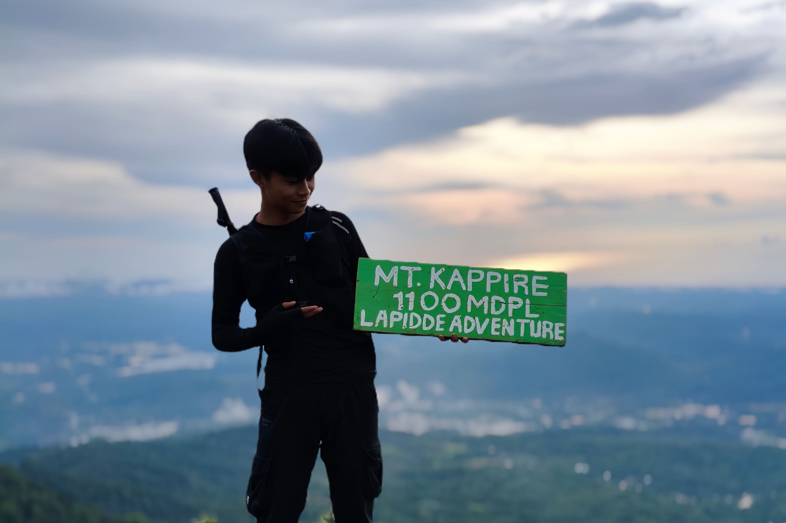
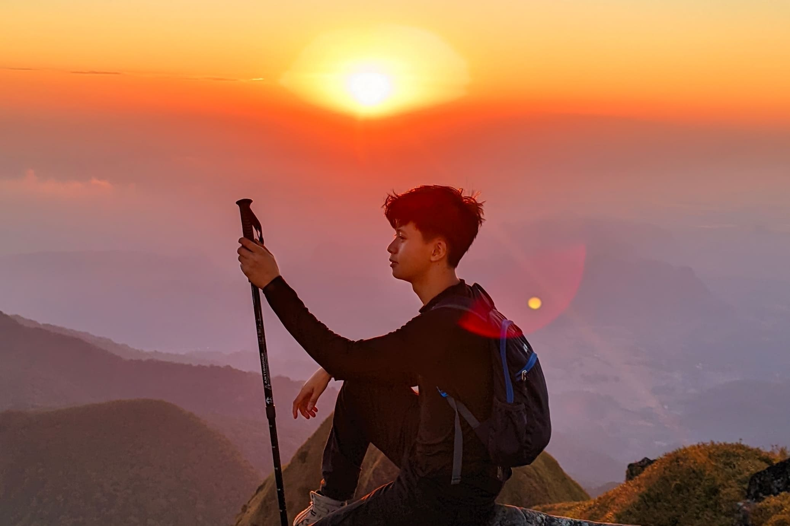
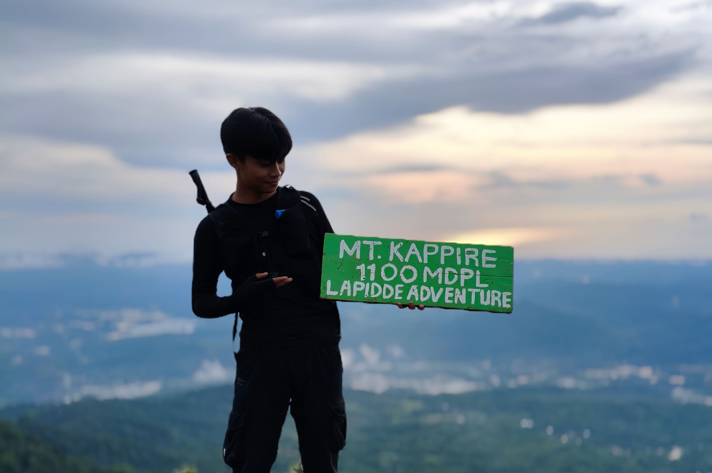
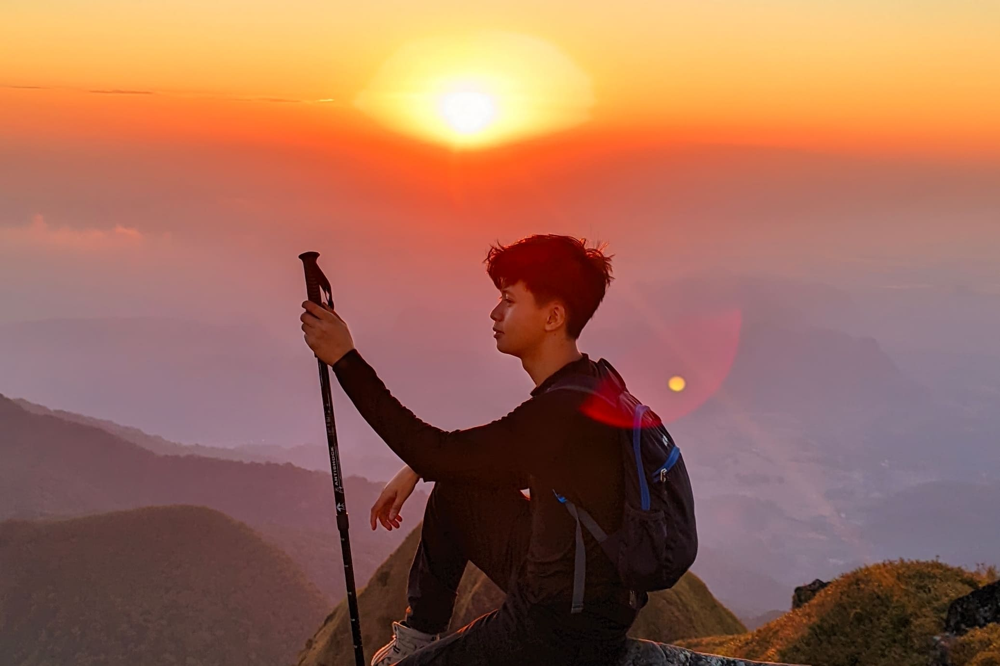
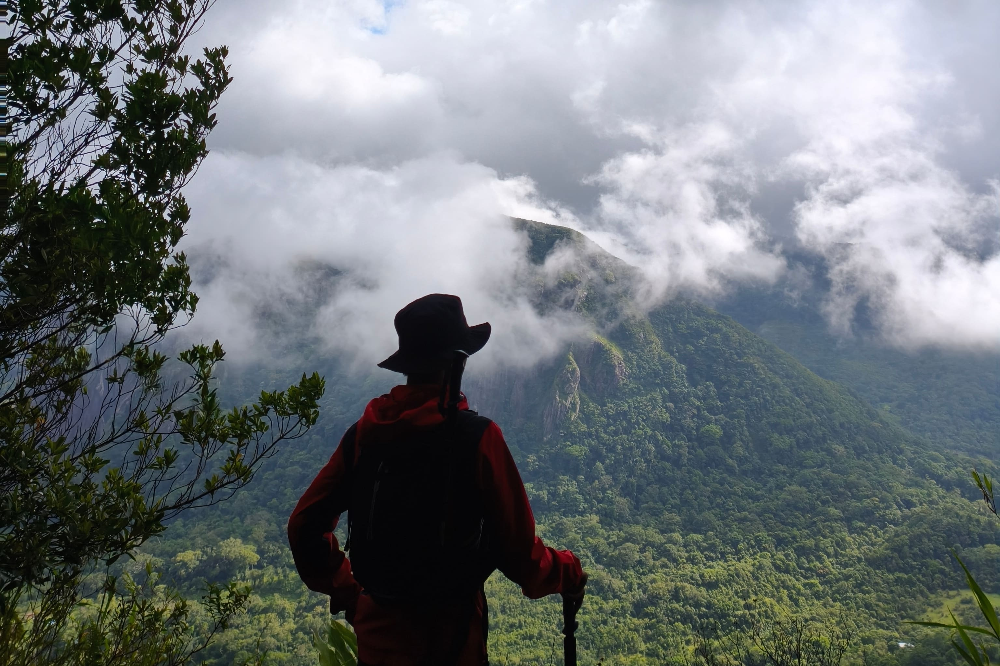
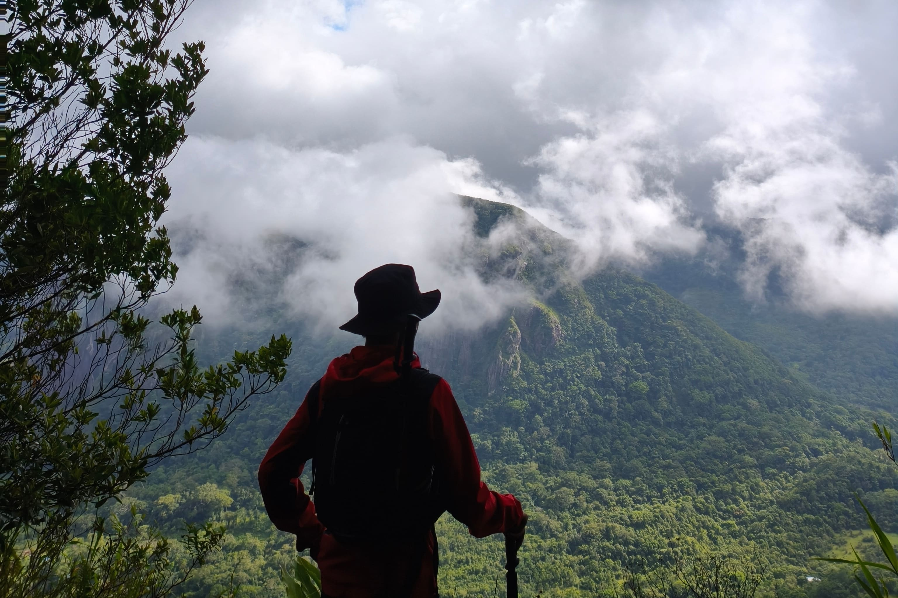

Exploration

Puncak Talung
Puncak Talung adalah tempat di mana lelah pendakian terbayar oleh hamparan alam yang menenangkan. Udara sejuk, lanskap pegunungan, dan sunyi yang damai menjadikannya ruang terbaik untuk berhenti sejenak dan menyadari betapa kecilnya manusia di hadapan alam..

Lembah Ramma
Lembah Ramma terletak di kawasan Gunung Bawakaraeng, Kabupaten Gowa, Sulawesi Selatan. Lembah ini berupa hamparan padang rumput luas yang dikelilingi perbukitan dan tebing pegunungan, dengan aliran sungai kecil dan udara yang sejuk.

Danau Slank
Danau Slank terletak di jalur pendakian Gunung Bawakaraeng, dekat Lembah Ramma. Danau kecil dengan air tenang ini dikelilingi padang rumput dan perbukitan, menghadirkan suasana sejuk dan hening.

 




 
